Ujaval Gandhi
Ujaval GandhiStilizovanje rečne mreže pomoću izraza (QGIS3)¶
Doprinos: Stiven Kim
U prethodnom tutorijalu Kreiranje blokovske mape sveta (QGIS3) koristili smo izraze za skaliranje vrednosti i primenu kolorne rampe. Nadovezujemo se na te koncepte i učimo kako da koristimo izraze za vizuelizaciju reka u popularnom stilu.
Белешка
Ovaj tutorijal se fokusira na upotrebu izraza za stilizovanje. Možete pogledati naš drugi tutorijal Kreiranje karte rečnog sliva u boji (QGIS3) koji kreira drugačiju verziju mape prikazane ovde koristeći tok rada zasnovan na alatima.
Pregled zadatka¶
Koristićemo izraze za filtriranje i stilizovanje južnoameričkih reka - sa širinama linija koje predstavljaju visoravni, a bojama koje predstavljaju identifikator sliva iz HydroRIVERS-a.
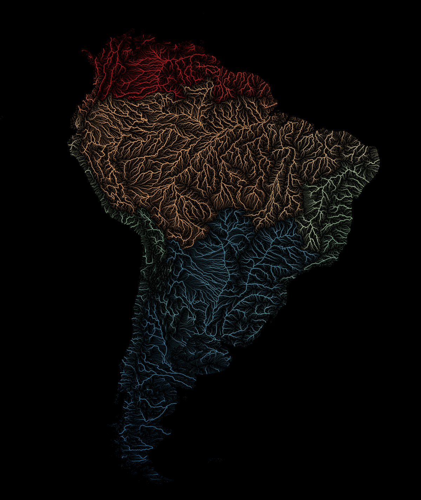
Dobijte podatke¶
Skup podataka HydroRIVERS pruža besprekornu globalnu pokrivenost rečnih delova konzistentne veličine, potkrepljen geometrijskim informacijama koje omogućavaju osnovnu analizu topologije rečne mreže, kao što su povezanost potoka i udaljenosti. Podaci su podskup sveobuhvatnog HydroATLAS paketa od WWF-a. Preuzmimo shapefile reka za Južnu Ameriku.
Posetite početnu stranicu HydroRIVERS.
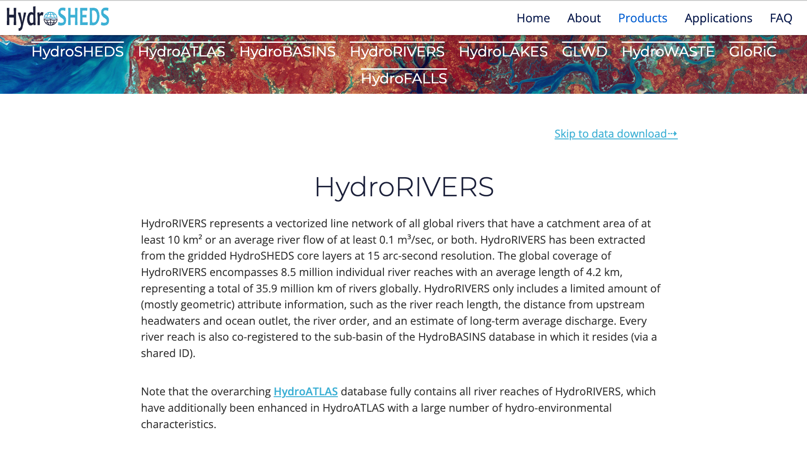
Stranica sadrži linkove za globalne i regionalne izvode HydroRIVERS-a u formatima shapefile-a i geobaze podataka. Pomerite se nadole i kliknite na link za preuzimanje shapefile-a „Južna Amerika“. Videćete preuzetu datoteku „HydroRIVERS_v10_sa_shp.zip“ koja se koristi za ovaj tutorijal.
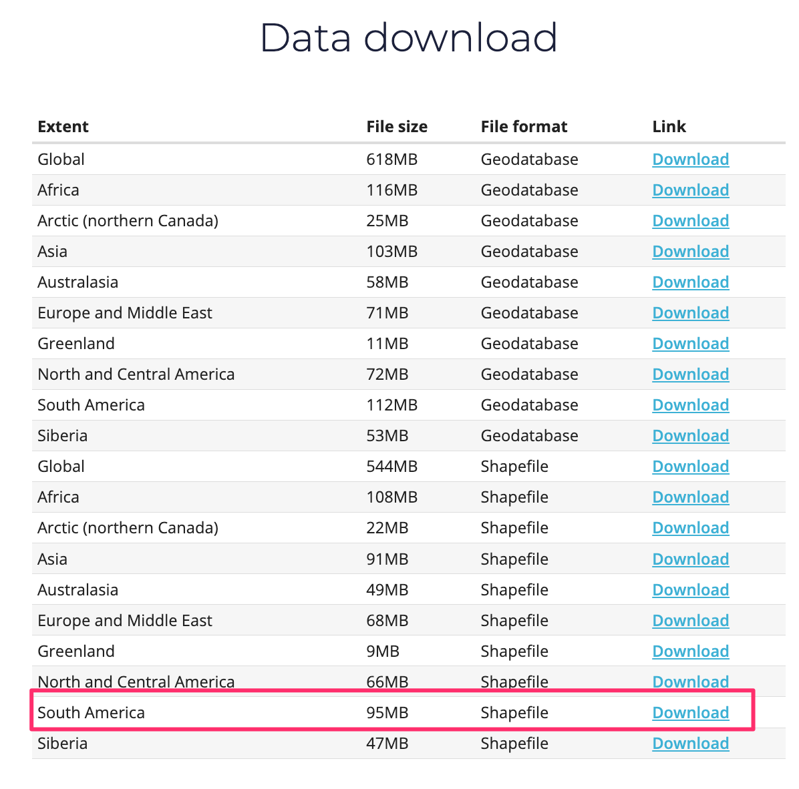
Radi lakšeg korišćenja, možete direktno preuzeti kopiju gornjeg sloja odozdo: HydroRIVERS_v10_sa_shp.zip
Izvor podataka: [HYDROSHEDS]
Procedura¶
Pronađite datoteku
HydroRIVERS_v10_sa_shp.zipu QGIS pregledaču i proširite je. Izaberite datotekuHydroRIVERS_v10_sa_shp/HydroRIVERS_v10_sa.shpi prevucite je na platno.
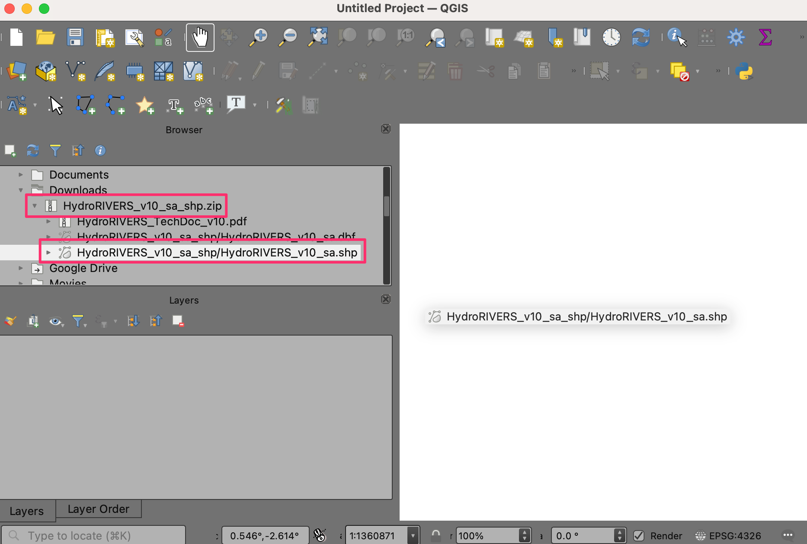
Novi sloj
HydroRIVERS_v10_saće sada biti učitan u QGIS i trebalo bi da vidite mapu reka u Južnoj Americi. Kliknite na Otvori panel za stilizovanje sloja.
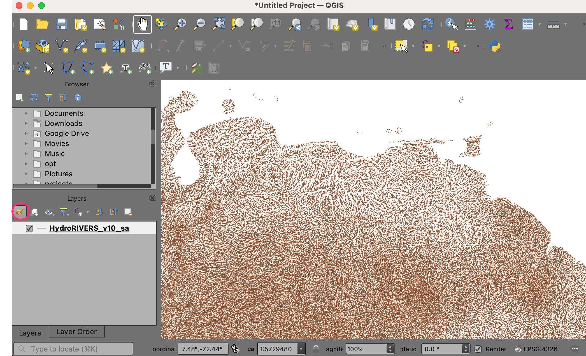
Pređi sa Jedan simbol na Zasnovano na pravilima.
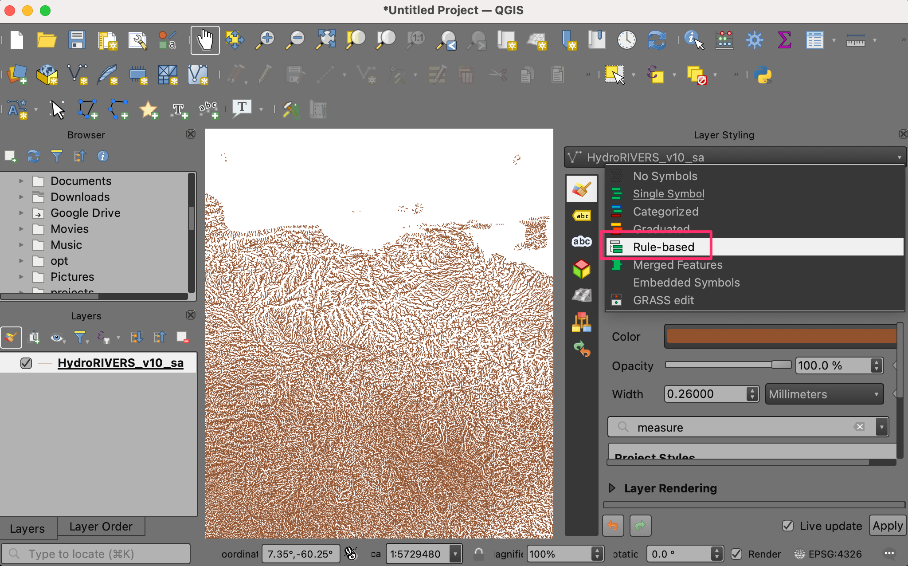
Dvaput kliknite na podrazumevano pravilo da biste ušli u dijalog Izmeni pravilo.
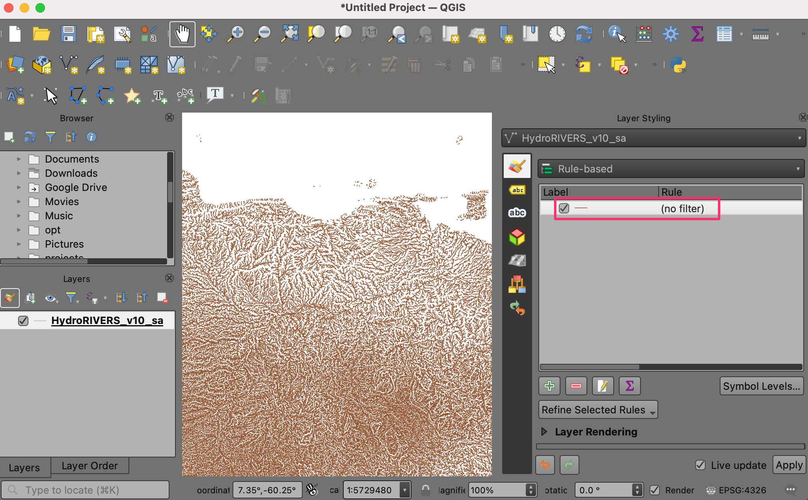
Da biste filtrirali pomoću izraza, kliknite na Filter e. Ovo će otvoriti Kreator izraza.
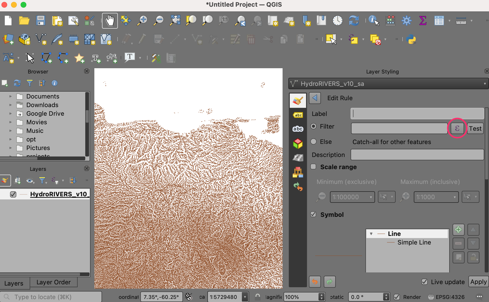
Izaberite polje Izraz sa leve strane da biste uneli izraz na sledeći način i kliknite na U redu. Ovaj izraz bira rečne objekte sa površinom visoravni jednakom ili većom od 100 kvadratnih kilometara.
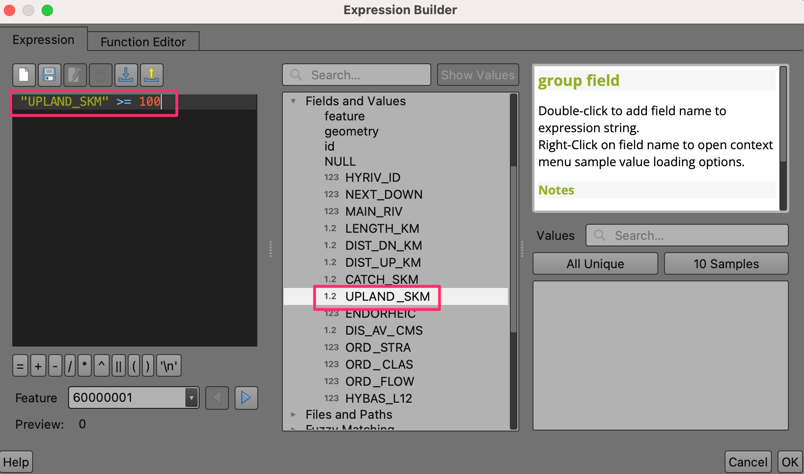"UPLAND_SKM" >= 100
Mapa sada prikazuje filtrirane reke sa velikim planinskim područjima. Ovaj prag možete podesiti na osnovu razmera vašeg regiona.

Sada kada smo koristili izraz za filtriranje objekata, hajde da upotrebimo izraz za bojenje svakog rečnog segmenta na osnovu polja
MAIN_RIV. Pomerite se nadole do opcija Simbol u panelu za stilizovanje i izaberite Jednostavna linija da biste prikazali opcije stilizovanja kao što su boja, širina linije i još mnogo toga. Kliknite na dugme Prekoračivanje definisanja podataka za Boja i izaberite Uredi… u meniju.

Ovim se otvara dijalog Kreator izraza za boju. Unesite izraz ispod. Ovaj izraz kombinuje funkcije
ramp_color()iscale_linear()da bi se izabrale boje sa spektralne rampe boja koristeći opseg vrednosti MAIN_RIV id. Kliknite na U redu da biste izašli iz dijaloga.
ramp_color('Spectral',scale_linear("MAIN_RIV", minimum("MAIN_RIV"),maximum("MAIN_RIV"),0,1))
U dijalogu Izmeni pravilo, kliknite na dugme Poništi definisanja podataka za Širina poteza i izaberite Izmeni… u meniju. Unesite sledeći izraz. Izraz skalira širinu linije na osnovu brdske površine svakog rečnog segmenta, sa minimumom od 0,01 mm do maksimuma od 0,1 mm za reke sa brdskom površinom jednakom ili većom od 10.000 kvadratnih kilometara.
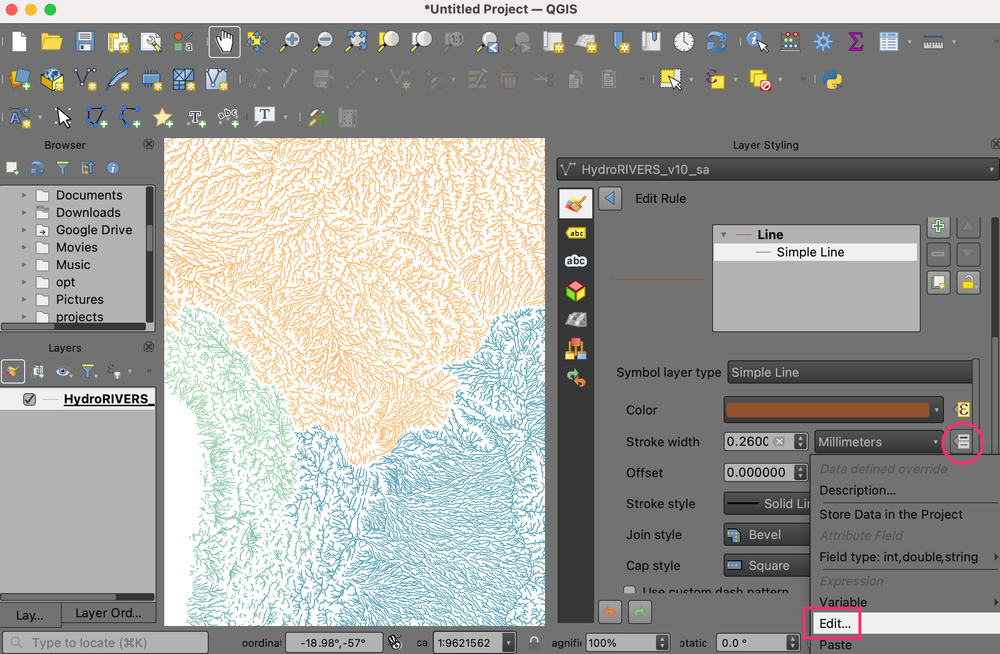scale_linear("UPLAND_SKM",100,10000,0.01,0.1)
Kliknite na OK da biste izašli iz dijaloga. Rečne linije će sada biti prikazane u različitim širinama na osnovu njihovog brdskog područja. Izraz treba da se proceni za svaku karakteristiku i stoga prikazivanje može potrajati neko vreme.

Promenićemo boju pozadine u crnu da bi bila u kontrastu sa našim izborom boja. Idite na . Kliknite na strelicu nadole i izaberite crnu. Kliknite na OK.
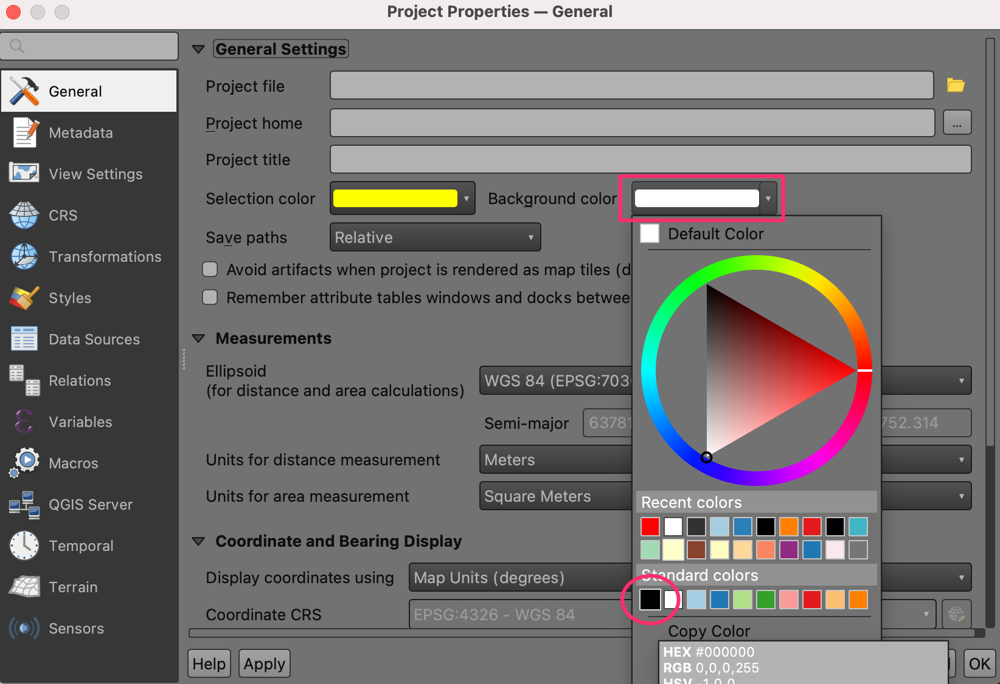
Sada bi trebalo da vidite kompletnu rečnu mrežu Južne Amerike.
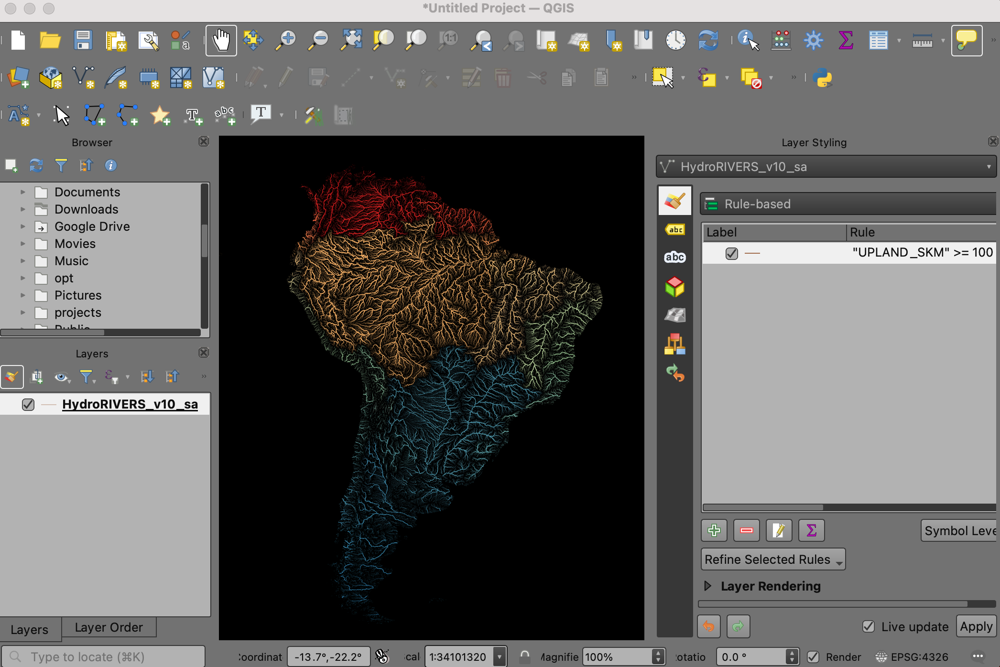
If you want to give feedback or share your experience with this tutorial, please comment below. (requires GitHub account)